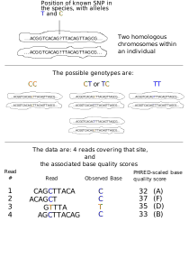

install.packages("whoa")
library(whoa)
library(vcfR)
# you might have to change the file location, depending on where
# files get downloaded to on your laptop
v <- read.vcfR("~/Downloads/raw-fall-late-fall-geno-calls.vcf.gz")
gfreqs <- exp_and_obs_geno_freqs(v)
geno_freqs_scatter(gfreqs, alpha = 0.04, max_plot_loci = 1e15)14 Variant calling
Using aligned sequencing data to identify positions in the genome at which polymorphism is segregating in your sample—and identifying the genotypes of your sampled individuals at each of those variable positions—is a crucial step in conservation genomics. This is the step where sequence data are finally converted into genotypes for individuals, and it is information about these genotypes that will get used in downstream analyses to answer the questions that you actually want to answer as a conservation geneticist: How much genetic variation remains in this small population? What does the population structure of this species look like across North America? Can I find evidence that this animal is using migratory corridors through wetlands? Is this rare species at risk due to hybridization with a more abundant introduced species? etc. All of these questions make use of variant data, because there is not much to be gleaned by looking only at portions of the genome that are identical between all individuals.
At the same time, this variant-calling and genotyping step is the place in the next-generation sequencing bioinformatic workflow when you will be most aggressively confronted with issues of statistical inference. It becomes important to have at least a rudimentary understanding of the process of inference and the difference between likelihoods and posterior probabilities, so we will touch on such themes in this chapter.
We start with a sketch of the models used to compute genotype likelihoods and describe what those quantities are. All of the models in use derive from a simple conceptual model in which we are trying to learn about the sequence at a genomic position on the two homologous chromosomes within a diploid individual by drawing samples from them—those samples are the sequencing reads. We then proceed to three different programs/workflows that compute such genotype likelihoods: two of them—angsd and bcftools mpileup operate directly on the aligned positions in BAM files, while the third, GATK HaplotypeCaller takes the aligned reads in a BAM as a starting point to do another round of local realignment/assembly of the reads.
After discussion of these methods for calculating genotype likelihoods we will consider some of the sources of uncertainty/variability in their calculation. One of the main themes is their rather strong dependence on the estimated base quality scores, and we will touch briefly upon the idea of base quality score recalibration.
Finally, we will consider the issue that many procedures in which we would like to use our data require genotypes as input, rather than genotype likelihoods. As a consequence, we can either convert our genotype likelihoods into called genotypes, or we can make use of methods that can take genotype likelihoods as input. The former can be problematic because it does not allow uncertainty about the genotypes to be propagated to the result, and can lead to systematic biases in genotype data sets. We will look at some of that from early RAD sequencing data. For many analyses, however, a version that relies on genotype likelihoods rather than genotypes might not be available.
14.1 Genotype Likelihoods
14.1.1 Basic Sketch of Genotype Likelihood Calculations
There are several genotype likelihood models in use, but they all share a number of properties and assumptions. Perhaps the easiest way to come to understand how genotype likelihoods are calculated is to work through a simple example, like that show in Figure @ref(fig:genolike).

The figure shows a situation where we know that there is variation (a SNP that has two possible alleles: T and C) at a certain position along a given chromosome. A diploid individual is represented by the two homologous chromosomes that s/he carries, and the alleles carried on those chromosomes are represented by ?’s because we don’t know (without collecting and analyzing data) what the genotype of that individual is.
The data that we will use to determine the genotype of this individual are the 4 reads from the individual that cover the position we are interested in. Specifically, from each read we observe:
- The reported base at the position
- The reported base quality score at the position. Recall from Section @ref(bqscores) that the Phred-scaled base quality score is interpreted as \(\lfloor -10\log_{10}\epsilon\rfloor\), where \(\epsilon\) is the estimated probability that the reported base at the position is incorrect.
We can condense the data down to the base calls, \(B\), and \(\epsilon\)’s at each of the four reads. To do so we convert the Phred score \(Q\) to \(\epsilon\) using \(\epsilon = 10^{-Q/10}\)
- \(B_1 = C\) and \(\epsilon_1 = 10^{-32/10} = 0.00063\)
- \(B_2 = C\) and \(\epsilon_2 = 10^{-37/10} = 0.00019\)
- \(B_3 = T\) and \(\epsilon_3 = 10^{-35/10} = 0.00031\)
- \(B_4 = C\) and \(\epsilon_4 = 10^{-33/10} = 0.00050\)
Those are the raw data that go into our calculations of how likely it is that the true genotype of the individual is either a homozygote, \(CC\), or a homozygote, \(TT\), or a heterozygote, \(CT\) or \(TC\) (referred to simply as \(CT\) from now on).
There are a few different ways that one might go about this task. One of the simplest would be the “method of the eyeball,” by which you would just look at the reads and say, “That individual is probably a heterozygote, \(CT\).” This is actually a reasonable assessment in this situation; however it is not highly principled and it is hard to instruct a computer to employ the “method of the eyeball.”
By contrast, the method of likelihood provides a principled approach to evaluating how much evidence a given set of data, \(D\), provides to distinguish between several different hypotheses. In our case, the three different hypotheses are that the true, underlying genotype, \(G\) is either \(CC\), \(CT\), or \(TT\). It is also relatively easy to tell a computer how to compute it.
Let’s be explicit about our terms. We have three different hypotheses:
- \(H_1:~~~G = CC\)
- \(H_2:~~~G = CT\)
- \(H_3:~~~G = TT\)
In our situation, as we have defined it, those are the three possibilities. And we want to calculate the evidence in our data \(D\) (which in this case is \(B_i\) and \(\epsilon_i\), for \(i = 1,2,3,4\)) in support of those different hypotheses.
The method of likelihood states that the evidence in the data \(D\) supporting a hypothesis \(H_i\), can be quantified as being proportional to the probability of the data given the hypothesis. Hence we write: \[ L(H_i~|~D) \propto P(D~|~H) \] Thus, to compute \(L(H_1~|~D) = L(G = CC~|~D)\) we must calculate the probability of observing the four reads, C, C, T, C, given that the true, underlying genotype is \(CC\). To do so requires a conceptual model of how reads arrive to us from the different chromosomes in an organism. Forming such a model requires that we make some assumption. Two assumptions that are shared by most genotyping likelihood models are:
- Reads are sampled independently from the two homologous chromosomes in an individual, each with probability \(1/2\).
- Given the true sequence on the chromosome from which the read is a sample, the base at each position is recorded as the true base on the chromosome with probability \(1 - \epsilon\), and, with probability \(\epsilon\) the base is recorded incorrectly.
With these two assumptions, it is straightforward to calculate the probability of the observed base on a single read given each of the three different possible true genotypes. Let’s do that with the first read, which has \(B_1 = C\) and \(\epsilon_1 = 0.00063\),for the three different possible true genotypes:
- If \(G=CC\) then, with probability \(1/2\) the read is from the first chromosome or with probability \(1/2\) the read is from the second chromosome; however, in either case that read is from a chromosome that carries a \(C\). So with probability 1 the read is from a chromosome with a \(C\). Hence with probability \(1-\epsilon_1\) the read carries a \(C\). So, \[ P(B_1=C~|~G=CC, \epsilon_1) = 1 - \epsilon_1 \]
- If \(G=CT\) then, with probability \(1/2\), the read is from the chromosome with a \(C\), in which case the probability of observing a \(C\) on the read is \(1 - \epsilon\). On the other hand, with probability \(1/2\) the read is from the chromosome carrying a \(T\), in which case, recording a \(C\) requires that a sequencing error occurred. Therefore: \[ P(B_1=C~|~G=CT, \epsilon_1) = \frac{1}{2}(1 - \epsilon) + \frac{1}{2}\epsilon_1 = \frac{1}{2} \] Notice that this is less than \(P(B_1=C~|~G=CC, \epsilon_1)\) by a factor of about 2.
- Finally, if \(G=TT\), then, with probability 1, the read will come from a chromosome carrying a \(T\), and in that case, the only way that we could have recorded a \(C\) from the read would be if a sequencing error occurred. Hence: \[ P(B_1=C~|~G=TT, \epsilon_1) = \epsilon_1 \] So, summarizing the information from the first read we have: \[ \begin{aligned} L(G=CC | B_1 = C) &= P(B_1 = C| G=CC, \epsilon_1) & &= 1 - \epsilon_1 & &= 0.99937 \\ L(G=CT | B_1 = C) &= P(B_1 = C| G=CT, \epsilon_1) & &= \frac{1}{2} & &= 0.5 \\ L(G=TT | B_1 = C) &= P(B_1 = C| G=TT, \epsilon_1) & &= \epsilon_1 & &= 0.00063 \end{aligned} \] A higher likelihood implies more support for a hypothesis. So, with that one read we have good evidence that the true genotype is not \(G=TT\), and twice the likelihood that \(G=CC\) compared to \(G=CT\).
Now, more quickly, we can consider how much evidence read 3, \(B_3 = T\) with \(\epsilon_3 = 0.00031\) offers: \[ \begin{aligned} L(G=CC | B_3 = T) &= P(B_3 = T| G=CC, \epsilon_3) & &= \epsilon_3 & &= 0.00031 \\ L(G=CT | B_3 = T) &= P(B_3 = T| G=CT, \epsilon_3) & &= \frac{1}{2} & &= 0.5 \\ L(G=TT | B_3 = T) &= P(B_3 = T| G=TT, \epsilon_3) & &= 1 - \epsilon_3 & &= 0.99969 \end{aligned} \] OK, that tells us there is very little support for \(G=CC\), and twice as much support for \(G=TT\) as there is for \(G=CT\).
How do we combine the likelihoods from the different reads? Well, we compute the probability of observing both of those reads. Since we assumed that reads are sampled independently from the pair of homologous chromosomes, the joint probability of both reads is merely the product of probabilities for each read. So, we have: \[ \small \begin{aligned} L(G=CC | B_1 = C, B_3 = T) &= P(B_1 = C| G=CC, \epsilon_1) \times P(B_3 = T| G=CC, \epsilon_3) & &= 0.99937 \times 0.00031\\ L(G=CT | B_1 = C, B_3 = T) &= P(B_1 = C| G=CT, \epsilon_1) \times P(B_3 = T| G=CT, \epsilon_3) & &= 0.5 \times 0.5 \\ L(G=TT | B_1 = C, B_3 = T) &= P(B_1 = C| G=CT, \epsilon_1) \times P(B_3 = T| G=TT, \epsilon_3) & &= 0.00063 \times 0.99969 \end{aligned} \] I couldn’t fit the actual products of each of those up above, so we put them down here: \[ \begin{aligned} L(G=CC | B_1 = C, B_3 = T) &= 0.00031\\ L(G=CT | B_1 = C, B_3 = T) &= 0.25\\ L(G=TT | B_1 = C, B_3 = T) &= 0.00063 \end{aligned} \] So, with only two reads, one of each allele, the likelihood of a heterozygote can be quite high.
Adding the data from the two remaining reads does not change the likelihood much, apart from factors of 1/2 on the heterozygote category.
What have we learned from this exercise? I’d say there are two very important take-home messages:
- If you have only a single read, the likelihood that the genotype is a homozygote is always higher than the likelihood that it is a heterozygote.
- If you only see reads of a single allele, the likelihood that the genotype is a heterozygote drops by a factor of two for each new read. (And the likelihood that the genotype is homozygous for the allele you have not seen drops by a factor of the estimated genotyping error each time).
- The values of the likelihoods for the homozygous hypotheses are highly dependent on the base quality scores but not so much for the likelihood of the heterozygous hypothesis.
Before we leave this section, we want to stress to the reader that genotype likelihoods are only half of the equation when it comes to determining what an individuals genotype is. We will talk about that more in the section on posterior probabilities. Suffice it to say, at this point, that assigning genotypes according to the maximum likelihood (which is common in programs like GATK) is a terrible idea with low read-depth data, because individuals that are truly heterozygotes will never be called as heterozygotes, unless both alleles have been observed in the read data.
14.1.2 Specifics of different genotype likelihoods
Will (eventually) write out the exact details of samtools’s old and GATK old likelihoods. Also bcftools new likelihood and SOAP.
14.1.3 A Directed Acyclic Graph For Genotype Likelihoods
The assumptions about independence between reads and the formulation of the genotype likelihood model can be captured in an acyclic directed graph (called a DAG, for short) like that in Figure @ref(fig:single-geno-like-dag). We expand the notation established above, but subscript each variable by an additional \(i\) to indicate the data are from the \(i\)-th individual, and, rather than referring to the genotype as \(G\) we specifically indicate the allelic type of each gene copy within individual \(i\) with the variable \(Y\).
Thus, \(B_{i,1}\) is the base covering the SNP at the first read from indivdiual \(i\), \(\epsilon_{i,1}\) is the base quality score (as a probability of a sequencing error) at that SNP on the first read from individual \(i\), and \(Y_{i,1} = C\) and \(Y_{i,2} = T\) denote that the genotype of individual \(i\) is heterozygous, \(CT\).

Of course, we may will typically have sequencing data from multiple individuals. So let us imagine that we have data from \(N\) individuals (\(i=1,\ldots, N\)). Additionally, each individual will have a variable number of reads covering the SNP we are focused on. We denote that number of reads by \(R_i\) for the \(i\)-th individual, and subscript each read by \(j\). Hence, in the \(i\)-th individual, \(j=1,\ldots,R_i\). Then, our DAG can be expanded to what we find in Figure @ref(fig:plated-single-geno-like).

Acyclic directed graphs can be very useful for gleaning the underlying structure of statistical models and also for developing intuition for what is involved in the process of inference.
I haven’t quite figured out how/where to incorporate a discussion of these topics into this handbook, but in the meantime I want to cherry-pick a few topics about probability and statistics from: https://eriqande.github.io/con-gen-2018/bayes-mcmc-gtyperr-narrative.nb.html
There, we will discuss inference and directed acyclic graphs from the perspective of inferring allele frequencies from genotype data. After that discussion, we will understand that inference is the process of learning about unobserved “parent” nodes in a DAG from the data that has been observed in the daughter nodes of such a DAG.
Knowing that, we can go back to @ref(fig:plated-single-geno-like) to see that making inference about the actual alleles carried in each individual’s genotype requires some sort of “prior” for those genotypes. Such a model is, graphically, what we were just talking about in terms of estimating allele frequencies. Which leads us to a full DAG for making inference about genotypes within individuals (Figure @ref(fig:full-geno-like-dag))

This is really how genotype inference should be done! And, it is extremely important to understand that many genotype callers provide a “called genotype” in a VCF file that do not infer genotypes using this sort of model. Rather, they may often simply report the genotype with the highest likelihood (but not necessarily the highest posterior probability.)
As a consequence, especially with low coverage sequencing data, these genotypes provided by default in a VCF will have far fewer heterozygotes than there should be.
Now we will jump to some slides from a talk I gave a couple years ago about this topic as it relates to RADseq data: gbs-miscall.pdf
And, point out that the very same problem occurs in low-coverage whole genome sequencing data if you just try to use the genotypes reported in a VCF like that produced by GATK.
For an illustration of that, here is a VCF file with 5.16 Mb of Chromosome 28 from 48 fall/late-fall-run Chinook salmon from the Central Valley of California. These fish are from different populations, but the populations are so similar, genetically, that you don’t expect a Wahlund effect by mixing them into a single sample.
raw-fall-late-fall-geno-calls.vcf.gz.
Download that to your laptop, then use R within RStudio to get the ‘whoa’ package from CRAN and then make a plot:
Whoa!
14.2 GATK’s gVCF Workflow
The Genome Analysis Toolkit, or GATK, includes a program called HaplotypeCaller which is well respected for calling variants and computing genotype likelihoods from alignments (i.e., from BAM files).
A key feature of HaplotypeCaller is a local reassembly step in which all the reads in a small “active” region of the genome are inspected and reassembled amongst themselves in a way that can provide a clearer picture of the presence of short structural variations like insertions and deletions (collectively called “indels,” for short). This local reassembly step helps to improve the HaplotypeCaller’s accuracy when calling indels.
Here is a reminder of what insertions and deletions look like.
AGTGGACCTGACTA <- Reference Genome
AGTGG--CTGACTA <- Aligned read with a deletion
AGTGGAC---CTGACTA <- Reference Genome expanded to show insertion site
AGTGGACAAGCTGACTA <- Aligned read with an insertion
Because HaplotypeCaller has good performance for small structural variants, and because GATK tools are quite well supported (the Broad Institute has an active team of representatives and developers that reply to user issues quite quickly when there is a problem with their software), HaplotypeCaller, and other associated GATK tools, are frequently used in bioinformatics.
When HaplotypeCaller first became available, a standard analysis with it involved running it with all the samples you had, together at the same time, so that variant calling could be done jointly, directly producing a VCF file for all the individuals. In other words, it was important to have all of your samples in a single run so that if HaplotypeCaller found a variant in one individual it could score that variant in all the other individuals of the sample. We will call this the “direct-to-VCF” mode of operation for HaplotypeCaller. In the early 2000s, when sequencing was considerably more costly than it is today, this was a reasonable strategy, because data sets at the time didn’t include a whole lot of individual samples. However, today, when hundreds of individuals can be sequenced throughout their genomes for only a few thousand dollars, the limitations of the direct-to-VCF approach have become more apparent.
The first problem is that run times for HaplotypeCaller in direct-to-VCF mode do not scale linearly with the number of samples. In other words, if instead of a sample of size 50 birds, you run HaplotypeCaller in direct-to-VCF mode on a sample of 200 birds, the program will not simply require 4 times more computation. Rather, it might require 8 times more computing time. As an example of this, I performed a small experiment with alignments from 240 Chinook salmon. I randomly sampled (without replacement) a subsample of size 4, 8, 16, 24, 36, 48, 72,…, 240 fish and ran a 100 Kb section of their alignments though HaplotypeCaller in direct-to-VCF mode using 4 cores. I repeated this with 10 different random subsamples for each of the sample sizes, and recorded how much CPU time HaplotypeCaller used in each case. The results are plotted in the figure below.
The blue line shows the average CPU time for the 10 replicates at each value of sample size. The blue dots show the CPU time for each individual replicate, and the dashed black line shows what we would expect the times to be—based on the time for 48 samples—if HaplotypeCaller’s run time increased linearly with the number of samples. The blue line clearly looks like a parabola, which means that as your sample sizes get larger and larger, the penalty that you pay having to load all of your samples into HaplotypeCaller at the same time increases faster than the number of samples—it looks like it increases quadratically.
The second problem with having to run HaplotypeCaller on all of your samples at the same time is encountered when you want to add more samples. If you started your sequencing project with 120 fish, and then after you had created a VCF file using HaplotypeCaller in direct-to-VCF mode, one of your collaborators surprises you with 20 more samples to add to the study, you would have to run all 140 fish, total, through HaplotypeCaller in direct-to-VCF mode, which is somewhat redundant, since you had already run 120 of them through it just a little while before. This problem is called the \(N+1\) problem by the GATK developers, presumably because it irked them to no end that they had to run HaplotypeCaller on \(N+1\) samples, just to add one more sample to a VCF file that already had \(N\) samples in it.
To solve both the quadratic HaplotypeCaller runtime problem and the \(N+1\) problem, the scientists and the developers at the Broad Institute developed what is called the “gVCF workflow.” Although there are several different flavors of this workflow, we will be covering the latest flavor (at the time of writing) which proceeds in these three steps:
HaplotypeCalleris run, individually, on each single sample, creating a special type of VCF file called a gVCF file—one gVCF file for each individual sample. This gVCF file encodes information not just about sites that are clearly variable in the individual, but it also records how much evidence there is for the individual having a variable site in between the clearly variable sites.The GATK tool
GenomicsDBImportloads the gVCF files from all individuals into a special type of “genomics data base” that is optimized for retrieval of information across individuals at each possible location on each chromosome (or on a collection of scaffolds).The GATK tool
GenotypeGVCFsis then used to extract information from the genomics data base about all the individuals, at each position on a chromosome (or in a group of scaffolds), and this is used to jointly call the variants and genotypes of all the individuals, producing, in the end, a proper VCF file for each chromosome (or group of scaffolds).
Having these multiple steps involved in the process of creating a VCF allows for some flexibility in optimizing the desired properties of the workflow. Namely, in step 1, HaplotypeCaller is still used to do a local reassembly of all the reads within a single individual, enhancing the identification of indels, but, since that local realignment is not done over all individuals at once, it doesn’t suffer quadratic scaling with number of samples. Further, Step 3 still gets to use information from all the individuals jointly when calling variants, but it is done within the context of an efficient data base structure that allows that joint process to scale linearly in the number of samples. The hope is that this gVCF workflow provides the same accuracy as joint calling all samples simultaneously in a single run of HaplotypeCaller, while being much faster for larger numbers of samples. Details can be found in @poplin2017scaling.
Additionally, by saving the gVCF files produced for each individual, or, even better, the genomic databases including all the individuals, adding additional samples can be done relatively quickly by updating the genomic database with information from the new individuals. Thus, this workflow improves upon the \(N+1\) problem, being able to use many of the previously computed results (the gVCF files or the genomic data base) from the first \(N\) individuals.
Here, it is worthwhile to reflect upon how this gVCF workflow allows the end goal of obtaining a single VCF file with all your variants and all your samples to be broken down into separate, independent tasks (as this is a huge theme in bioinformatics). The direct-to-VCF workflow could be parallelized by breaking the genome into a lot of small regions and then running HaplotypeCaller on all the samples across just one small region at a time. The gVCF workflow, on the other hand, lends itself to parallelizing over individuals in step 1 (the HaplotypeCaller step) and then parallelizing steps 2 and 3 (genomics data base importing and genotyping) over regions of the genome. The regions focused upon for the genomics data base importing step are typically chromosomes, but you can also, as we shall see, combine many small scaffolds together into a single genomics data base. Step 3 can be further broken down over sub-regions of chromosomes, if desired.
14.2.1 Step 1. Running HaplotypeCaller and getting one gVCF for each sample
We will discuss this in the context or our example workflow in Section @ref(make-gvcfs).
14.2.2 gVCF files
So, you may be wondering what the difference between a VCF file a gVCF file is. It turns out that a gVCF is a special type of VCF file. (One of the nice things about the way VCF files [and SAM files, for that matter], is that the definition of various fields in the file can be made in the header, or in the FORMAT column, which makes it fairly easy to extend the files to novel situations in a format-compliant way.)
A comprehensive overview of gVCF files can be found at here, and it is recommended reading. In this section we just summarize the information in that document.
Let’s start by looking at the first few lines for a chromosome at an individual with low fairly low read depth. We see a lot of lines that look like this:
#CHROM POS ID REF ALT QUAL FILTER INFO FORMAT s001
CM031199.1 1 . A <NON_REF> . . END=71 GT:DP:GQ:MIN_DP:PL 0/0:1:3:1:0,3,15
CM031199.1 72 . T <NON_REF> . . END=72 GT:DP:GQ:MIN_DP:PL 0/0:1:0:1:0,0,0
CM031199.1 73 . A <NON_REF> . . END=110 GT:DP:GQ:MIN_DP:PL 0/0:1:3:1:0,3,15
CM031199.1 111 . C <NON_REF> . . END=138 GT:DP:GQ:MIN_DP:PL 0/0:1:0:1:0,0,0
CM031199.1 139 . T <NON_REF> . . END=139 GT:DP:GQ:MIN_DP:PL 0/0:2:3:2:0,3,45
CM031199.1 140 . A <NON_REF> . . END=141 GT:DP:GQ:MIN_DP:PL 0/0:2:0:2:0,0,0
CM031199.1 142 . T <NON_REF> . . END=144 GT:DP:GQ:MIN_DP:PL 0/0:2:3:2:0,3,45
CM031199.1 145 . A <NON_REF> . . END=146 GT:DP:GQ:MIN_DP:PL 0/0:2:0:2:0,0,0
CM031199.1 147 . G <NON_REF> . . END=147 GT:DP:GQ:MIN_DP:PL 0/0:2:3:2:0,3,45
CM031199.1 148 . G <NON_REF> . . END=149 GT:DP:GQ:MIN_DP:PL 0/0:2:0:2:0,0,0
CM031199.1 150 . A <NON_REF> . . END=151 GT:DP:GQ:MIN_DP:PL 0/0:2:3:2:0,3,45
CM031199.1 152 . A <NON_REF> . . END=155 GT:DP:GQ:MIN_DP:PL 0/0:2:0:2:0,0,0
CM031199.1 156 . A <NON_REF> . . END=156 GT:DP:GQ:MIN_DP:PL 0/0:2:3:2:0,3,45
CM031199.1 157 . G <NON_REF> . . END=159 GT:DP:GQ:MIN_DP:PL 0/0:2:0:2:0,0,0
CM031199.1 160 . G <NON_REF> . . END=160 GT:DP:GQ:MIN_DP:PL 0/0:2:3:2:0,3,45Aha! This is interesting. The gVCF file has records for sites that are not confident variants. Interesting. Each of the rows here gives an indication of how much information the reads from the individual give us about whether there might be a variant site at the individual.
Breaking it down, starting with the first row, we see that the ALT allele is listed as <NON_REF>. This is simply a code that means “Not the reference allele.” In other words, it is saying, “There might be a variant here, and if there is, then the alternate allele would be something that is not the reference allele.”
The other interesting thing on that line is the END=71 in the INFO field. That is telling us that all of the sites from position 1 (the value in the POS field) to position 71 are described by this single row. Using this type of mechanism, it is possible to describe every position in the genome without having a single row for each position. In other words, this system provides some compression.
If we look at the genotype column in the first row, we see 0/0:1:3:1:0,3,15. The fields between the colons in that are described by the value in the FORMAT column: GT:DP:GQ:MIN_DP:PL. The GQ field (the third one) is 3. That is a Phred scaled probability that the genotype call (0/0 or “reference homozygous”) is incorrect in this case. So, this is saying there is a \(1 / 10^{3/10} \approx 0.5\) chance that this individual is not homozygous for the reference allele at these sites (from POS = 1 to 71). This is not terribly surprising, since the read depth (in the DP field) at these sites is 1.
If we go deeper in the file, we find sites with higher read depth, and hence more confidence that the individual is homozygous for the reference allele. For example:
CM031199.1 1951 . C <NON_REF> . . END=1964 GT:DP:GQ:MIN_DP:PL 0/0:8:21:7:0,21,224Here, the sites from 1951 to 1964 all have a genotype quality of 21, indicating a chance of \(1/10^{21/10} \approx 0.0079\) that the individual is not homozygous for the reference allele at these sites.
On the other hand, when we come to a site where it is pretty clear from the information in a single individual that there is a variant, like:
CM031199.1 1903 . G T,<NON_REF> 210.02 . DP=7;ExcessHet=0.0000;MLEAC=2,0;MLEAF=1.00,0.00;RAW_MQandDP=25200,7 GT:AD:DP:GQ:PL:SB 1/1:0,7,0:7:21:224,21,0,224,21,224:0,0,4,3that information is recorded. At the site above (POS = 1903), this is saying that there is at least one alternate allele, which is a T, and the gVCF format leaves open the possibility that there is another alternate allele (coded as <NON_REF>) so that the possibility of that can also be computed and recorded. In this case, the individual has 7 reads total, and they are all for the T allele, which leaves us with a high genotype quality (21). The genotype likelihoods for all the different possible genotypes, ordered as:
GG,GT,TT,GN,TN,NNwhere N means <NON_REF> are also recorded in the PL field that looks like:
21:224,21,0,224,21,224This turns out to be all the information needed to eventually come back to this information in light of what was found at all the other individuals, and then jointly call variants using information from all the individuals.
14.2.3 The Genomics Data Base
The use of a genomics data base in order to speed up joint calling of variants and genotypes across all samples is still fairly new and seems to still be evolving, somewhat, as a part of the GATK ecosystem.
One thing that is worth understanding is “Why do we have to load all this stuff into a database? Why can’t we just zip through all the gVCF files to do joint variant calling?” The answer to that question is that it is fairly inefficient to have a program open multiple files (for example 100s of gVCF files) and then inch one’s way through each of them, constantly stopping and circling back when a variant position is found in one of the files which must be inspected in all the other files.
The old way of solving this problem was to combine all the gVCF files (one for each sample) into a single gVCF file that included all the individuals—one column for each. This can be done with GATK’s CombineGVCFs tool. That tool still sees some use in situations where you might only want to focus on a few intervals on different chromosomes that you know of ahead of time. However, when you want to call variants across the whole genome, it is preferable to load the information in the gVCFs into a specialized data base that makes it quick and efficient to garner information at a single position in the genome across all the individuals.
This is achieved in GATK by using a specialized variant of the TileDB system. TileDB is a data base that was designed to work well with sparse data—meaning that there are lots of possible values that the data can be associated with, but only a small number of those values have different values for the data. In this case, those values are the base positions in the genome, and the data are information from the different individuals (available in the gVCFs for each sample) about whether there is a variant at that position or not. One of the nice features of the TileDB system is that it is computationally economical to update the data base with new information, even if it is necessary to assign new information to a base position that is between two base positions that already have information, and that information can still be accessed quickly. This structure, once it is set up, makes it efficient to work one’s way through the genome base by base and combine information about possible variation from all the individuals, without having to laboriously go through each separate file.
The drawback of using this genomics data base is that it is something of a black box: it’s a little mysterious and it is hard to look at anything inside of it unless you are a computer scientist that specializes in these types of data bases—in fact, the GenomicsDB format and associated tools are the product of a collaboration between the computer scientists at Intel and the bioinformaticians at the Broad Institute.
As of this writing, there are two important documents on the GATK website for understanding how to use the GenomicsDBImport tool to import gVCF files into this genomics data base. The first is here and the second one, that goes more into performance considerations is here.
From the perspective of conservations genomicists who are working on non-model organisms, the most important thing to understand is that GenomicsDBImport is designed parallelize well by working on a single chromosome at a time—so you would typically launch multiple jobs, one for each chromosome, specified with the --interval option. For example using --interval CM031199.1 would make GenomicsDBImport create a data base that included only the chromosome CM031199.1. In the end, after doing that you get a completely separate data base (that occupies its own separate directory) for each chromosome. This is all fine and well if you are using a well-assembled human genome with all the DNA in chromosomes. However, in non-model organisms, an appreciable fraction of the reference genome might be recorded in thousands of short scaffolds. There is so much overhead involved in setting up these genomic data bases, that it does not make sense to set up a separate data base for each of the thousands of scaffolds that might only be 5 to 10 kb long (or even shorter!). Fortunately, there is an option to mash all these short scaffolds together into a single data base that treats all these scaffolds catenated together as if they were a single chromosome. This uses the --merge-contigs-into-num-partitions option.
My approach to using the --merge-contigs-into-num-partitions is to break the scaffolds down into scaffold_groups such that each of those scaffold groups has total length (the sum of the lengths of the scaffolds) is about 1/3 to 1/2 the average length of a chromosome. Then each separate scaffold group can be fed into GenomicsDBImport as a separate job, using --merge-contigs-into-num-partitions 1 to make sure that all of those scaffolds get merged into a single “pseudo-chromosome”. After these data bases are made, when you use them to call variants and create VCF files, they will produce a sinble VCF file that properly indicates which scaffold each variant was from—it doesn’t rename the scaffolds with some sort of pseudo-chromosome name.
The other particularly germane option to GenomicsDBImport is --genomicsdb-shared-posixfs-optimizations. This is recommended any time that your computer uses a shared POSIX filesystem, which, I believe, is going to almost always be the case when you are using an HPCC. So, if you are working on a cluster, you should always use this option.
If you have hundreds of samples, GenomicsDBImport can start to bog down if it opens connections to hundreds of gVCF files at the same time. In this case it is recommended that you tell GenomicsDBImport to import the gVCF files in batches of 50 using the option --batch-size 50. This imports the first 50 samples, then closes all their files, and then updates the data base by importing the next 50, and so on.
The program GenomicsDBImport can use multiple threads while reading the files; however, in my experience, there is little advantage above two threads. So, it can be useful to set the option --reader-threads 2.
By default, GenomicsDBImport will
Finally, since this is a GATK program written in Java, we can allocate memory to the Java Virtual Machine. However, with GenomicsDBImport we have to be a little careful, because much of the work in loading the data base is done using calls to compiled C++ libraries from the Java program. These libraries, themselves, can consume memory as well. So, you want to be careful not to give more than 80% or so of the available memory (i.e., the memory that you reqested from SLURM) to the Java Virtual Machine.
We can bring all of these together by running GenomicsDBImport in our example workflow. See Section @ref(use-genomicsdbimport).
14.2.4 Updating the GenomicsDatabase
One of the advantages of using a sparse data base format like TileDB is that it is possible to expand the data base without completely rearranging the existing content and without creating a new data base in which access to all the elements has been slowed considerably.
In fact, this is one of the big selling points of the GenomicsDB approach, especially as concerns the “\(N+1\)” problem: if you have kept your genomics data bases, then adding one or a few individuals to them can be quite quick. Of course, as we will see, the following step of creating a VCF file from the genomics data base still has to be done, and that can take a long time; however, at least when everything is stored in the genomics data base, that step should scale almost linearly with the number of samples, rather than quadratically (as we say above with the “direct-to-vcf” approach).
In principle, updating a GenomicsDB by adding information from new samples should be as easy as running GenomicsDBImport with a --genomicsdb-update-workspace-path path_to_dir option rather than the --genomicsdb-workspace-path path_do_dir option (where path_to_dir is simply the path to the existing genomics database directory, in the first case, and it is the path where you want the genomics database directory to be created, in the second case). Interestingly, when you run GenomicsDBImport to update an existing data base, you don’t supply the “–intervals` option, because the program will simply use the contents of the existing data base (that is being updated) to figure out which genomic intervals (i.e., which chromosome or which scaffold group) to import. This makes sense: you wouldn’t want to import the new samples at a different interval within the genomics data base—that simply wouldn’t work.
One thing that is important to note about GenomicsDBImport, as it stands today, is that you can only ever import a sample into it once. Thus, if, after creating a genomics data base with data from 50 individuals, you decide to do more sequencing on 10 of those individuals that didn’t have enough sequence depth, then you can’t just make new VCFs for those 10 individuals from the new sequencing and add it into the data base. Rather, you would have to merge the new data at the BAM file stage and then make new gVCFs and then import those 10 new gVCFs and the 40 existing ones into a new genomics data base.
Finally, a word of caution: the documentation for GenomicsDBImport is replete with warnings about how you should backup your genomics data bases before trying to update them. Apparently there is a good chance that any little glitch during the updating process could corrupt the entire data base and render it useless. Joy!
With that as a preamble, it does seem that we should try creating some data bases and then adding samples to them.